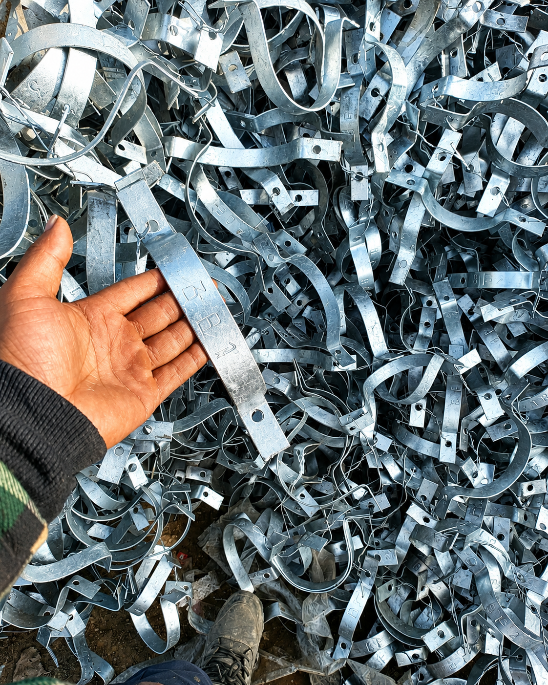
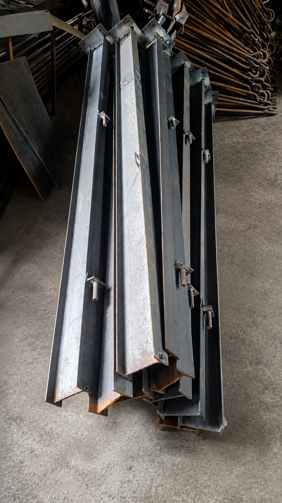
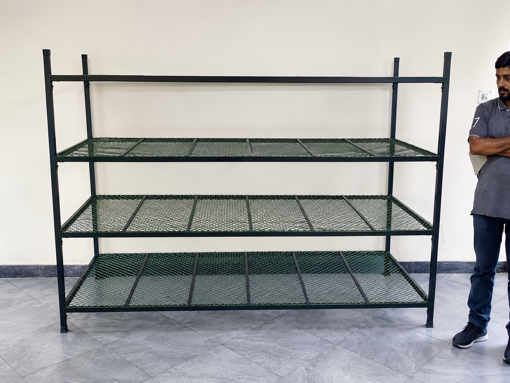
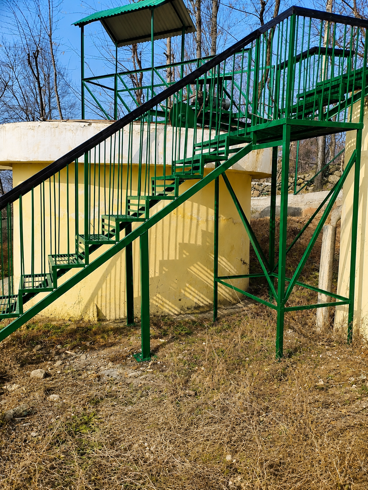
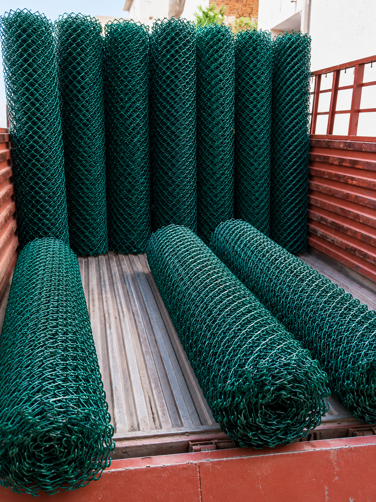
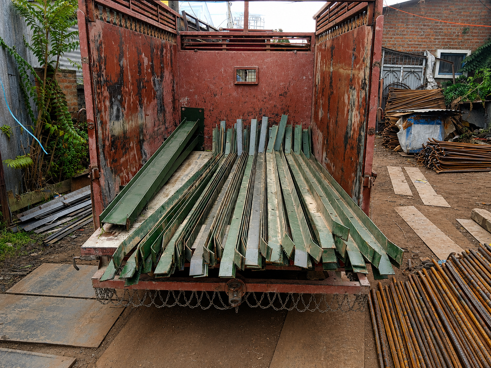

CUSTOM STEEL COMPONENTS · PROJECT GALLERY
Made for the
specific job.
Purpose-built steel components, fittings and fabricated items for agricultural, industrial and site-specific applications.

PROJECT OVERVIEW
One-off details, built with precision.
From anchor bolts and clamps to frames, racks, fencing and custom support structures, Steel Syndicate fabricates components tailored to each project’s practical requirements.
Our workshop provides reliable, repeatable custom production for individual items and larger order volumes.
07Project photographs
06+Component applications
100%Custom fabrication
CUSTOM STEEL COMPONENTS · GALLERY





